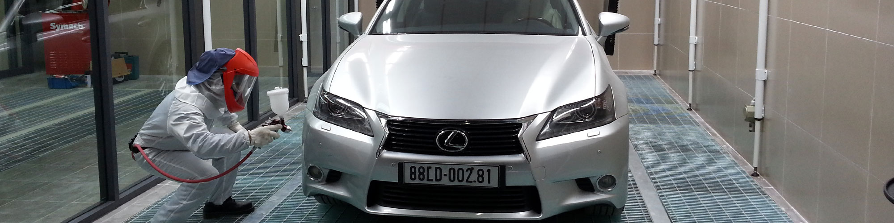
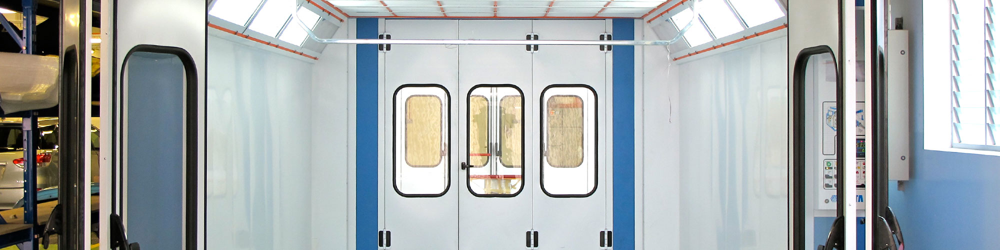

Weniger Stillstand. Mehr Sicherheit.
Wartung, Reparatur, Ersatzteile und Filterservice — damit Ihre Anlage zuverlässig läuft und Sie Betreiberpflichten im Blick behalten.
Geprüft ist besser als gehofft.
Fahrzeuglackierereien zählen zu den überwachungsbedürftigen Anlagen. Als Betreiber müssen Sie verschiedene Gesetze und Verordnungen einhalten — darunter BImSchG § 52, BetrSichV und DGUV Verordnung 3.
Die jährliche, dokumentierte Wartung und der regelmäßige Wechsel aller Filtermedien sichern Arbeits- und Betriebssicherheit.
Ein Protokoll, das weiterhilft.
Wir bieten die jährliche Wartung Ihrer Lackieranlage einschließlich der notwendigen Messungen und Prüfungen zum Festpreis an.
- Protokoll mit über 100 Prüfpunkten
- Gestempelter Eintrag in Ihr Betriebstagebuch
- Optional: Wärmeerzeugungsanlage, Frequenzumformer und elektrische Anlage nach DGUV V3

Schnell zurück in den Betrieb.
Langjährige Erfahrung in der Lackieranlagentechnik sorgt für effektive Fehlersuche und nachhaltige Fehlerbeseitigung. Unser geschultes Fachpersonal arbeitet lösungsorientiert und gewerkeübergreifend.
Mit Fachkräften und voll ausgerüsteten Servicefahrzeugen aus unserer Zentrale im Herzen Deutschlands sind wir schnell bei Ihnen.

Original Nova VertaDas passende Teil, wenn es zählt.
Als Generalimporteur von NOVA VERTA vertreiben wir ausschließlich Originalersatzteile. Die meisten Teile sind in unserem Zentrallager sofort verfügbar; Sonderanfertigungen kommen mehrmals wöchentlich aus Italien.
Originalfilter aus Italien und deutsche Filter namhafter Hersteller senden wir per Paketservice oder bringen sie zur nächsten Wartung mit.
Ersatzteile anfragen